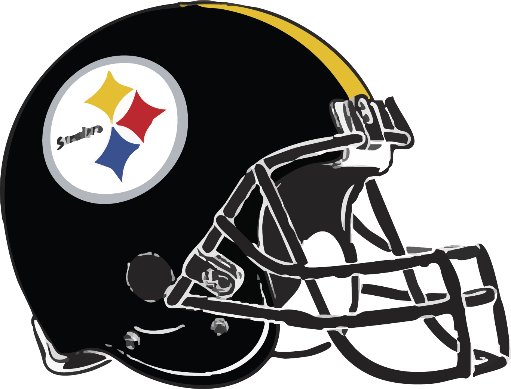

2026 NFL Draft
Let’s give a massive Steel City welcome to our ten newest Pittsburgh Steelers! These 2026 draft picks are officially on the clock to help us secure Super Bowl Franchise Win #7. To top it off, an astounding 800,000 fans packed downtown Pittsburgh over those three days to celebrate the future of Steelers football!
The Steelers got it Right!!


Pick #1 Here!
Following a surprise draft-day trade with the Dallas Cowboys, the Philadelphia Eagles land USC wide receiver Makai Lemon at pick 20—an ideal fit for their offense. Meanwhile, the Pittsburgh Steelers quickly pivot to select Arizona State offensive tackle Max Iheanachor. With a massive ceiling, Iheanachor has all the tools to develop into an All-Pro starter and a cornerstone protector for the next decade and a half. (Max's college number was #58, Steelers number will be #71.)
Pick #2 Here!
The Pittsburgh Steelers traded up with the Indianapolis Colts to select Alabama wide receiver Germie Bernard 47th overall in the second round of the 2026 NFL Draft. At 6-foot-1 and 206 pounds, the rookie brings immediate versatility and a pro-ready skill set to the Pittsburgh offense. (above #5, Steelers number will be #17.)

The Future is Now!


③ In the third round (76th overall) of the 2026 NFL Draft, the Pittsburgh Steelers bolstered their quarterback future by drafting Penn State standout Drew Allar. (above #15, Steelers number will be #16.)

⓸ Selected 85th overall in the 2026 NFL Draft, cornerback Daylen Everette joins the Pittsburgh Steelers' defense. (above #6, Steelers number will be #23.)
The Boys from Iowa!


⑤ Trading up on Day 2 of the 2026 NFL Draft, the Pittsburgh Steelers selected rookie guard Gennings Dunker out of Iowa with the No. 96 pick. (above #67, Steelers number will be #73.)
⑥ A record-breaking return specialist and explosive fourth-round pick out of Iowa, rookie wideout Kaden Wetjen brings his game-breaking speed to the Pittsburgh Steelers. (above #21, Steelers number will be #10.)
Crossroads of America!


⑦ A fifth-round pick in the 2026 NFL Draft, rookie Riley Nowakowski brings tight-end versatility to his fullback and H-back duties for the Steelers. (above #37, Steelers number will be #37.)

⑧ The Pittsburgh Steelers found a late-round defensive addition in the 2026 NFL Draft, securing rookie defensive tackle Gabriel Rubio out of Notre Dame with the 210th overall pick. (above #97, Steelers number will be #96.)
They will RISE in the Fall!
The 7th Round Gems!


⓽ The Pittsburgh Steelers added a high-upside rookie in seventh-round safety Robert Spears-Jennings during the 2026 NFL Draft. (above #3, Steelers number will be #28.)
🔟 The Mt. Lebanon PA product and former Navy star went 230th overall to the Pittsburgh Steelers in the seventh round of the 2026 NFL Draft. (above #22, Steelers number will be #29.)

Incredible news: 100% of our draft class secured a spot on the 53-man roster. Congratulations to the players for earning their places, and kudos to the coaching staff for their phenomenal talent evaluation. (updated: 8/30/2026)
See You at the Super Bowl!
The Steelers opened the 2026 Season at home on September 13th against the Atlanta Falcons at 1 pm EST at Acrisure Stadium with a 20-13 victory.